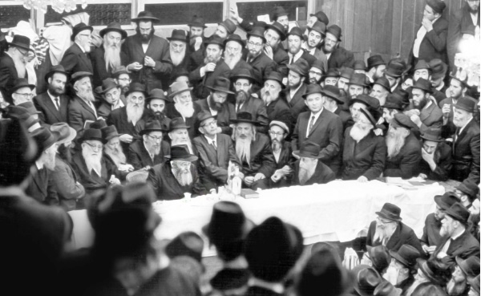

The Rebbe on What It Means to Be a Chassid
When a person goes to the Rebbe to ask about a spiritual or material concern, it is not because the Rebbe is an expert in this particular matter, but because the Rebbe is a neshama klalis (general soul), like a head which contains the life force of all the limbs of the body.
Compiled by Yisroel Lapidot

THE KO’ACH OF A CHASSID – AH SHTICK REBBE
As to actual avoda, you need to increase in spreading the wellsprings of Toras Ha’chassidus outward. As the Rebbe, my father-in-law, said, “A Chassid darf machen noch a Chassid” (A Chassid needs to make another Chassid). He went on to explain that the first mitzva of the Torah is “be fruitful and multiply,” and since even the order of Torah is precise (which is why we learn from immediate proximity [of Torah sections]), it is understood that the lesson (Torah being from the root meaning a lesson) from its being the first mitzva is, first and foremost, that a Jew must make another Jew, and likewise, a Chassid needs to make another Chassid.
He concluded that the ability of a Chassid to make another Chassid is because a Chassid is “ah shtick Rebbe!” (a Chassid is a piece of the Essence of the Rebbe).
(Sicha Shabbos Parshas Chayei Sarah 5712)
Love is the breath of life in the avoda of Chassidus, that which binds the Chassidim amongst themselves and that which binds the Rebbe with the Chassidim and the Chassidim with the Rebbe. It is both in a way of ohr yashar (direct light) and ohr chozer (reflected light); it knows no barriers and transcends the limits of time and place.
(HaYom Yom 26 Shevat)
A Chassid, said the Rebbe, is like a goat. Aside from fulfilling its job as a goat and providing milk, it knows no worries about its sustenance, since its owner makes sure to supply it with everything it needs. That is how a Chassid ought to fill the role demanded of him by the Rebbe. Consequently, the Rebbe will take care of all his needs.
(Sichas Acharon shel Pesach 5711)
THE DIFFERENCE BETWEEN A CHASSID AND A MISNAGED
One of the main differences between a Chassid and a Misnaged is that the foundational principle of the world view of a Chassid is that his neshama (and the neshamos of his peers) is a spark and branch of a more general neshama which is that of his Rebbe. As a result, whether in material or spiritual matters, they have a strong bond.
(Igros Kodesh vol. 9, p. 6)
To point out from what the Rebbe, my father-in-law, said that there are four types of connection between Rebbe and Chassid: 1) the way of teacher and student (mashpia and mekabel), 2) hiskashrus, d’veikus, and complete unity through Torah and avoda, 3) that of father and son, and 4) of luminary and light.
(Igros Kodesh, vol. 20, p. 62)
Just as Hashem “gives the Torah” (in the present tense) every day, the same is true with tzaddikim who “are likened to their Creator.” Thus, every day the Rebbe turns to him and says: Do such and such. He responds to the Rebbe every day: with 612 strands I obey, but with one strand – every day I take scissors and cut it.
Since, when it comes to Will and Kabbalas Ol there is no division of parts, it is not possible to go after the majority. Rather, even if there is one detail that he does not obey, even a detail that we were not explicitly commanded, but he, deep inside, knows that this is what is wanted and he needs to do it happily and with gladness of heart, and he doesn’t want to do it, he is rebelling against the king!
(Sicha Shabbos Parshas B’Reishis 5721)
So too with the hiskashrus between a Chassid and the Rebbe – even as regards a matter of a specific detail (one limb); the neshama depends on this limb, both on the part of the Rebbe and on the part of the Chassid:
When a person goes to the Rebbe to ask about a spiritual or material concern, it is not because the Rebbe is an expert in this particular matter, but because the Rebbe is a neshama klalis (general soul), like a head which contains the life force of all the limbs of the body.
(Sicha 12 Tammuz 5710)
THE CHASSIDIM’S CONDUCT AFFECTS THE REBBE
“Because naar Yisroel (Yisroel is a young boy) and I will love him,” through naar Yisroel – the avoda of kabbalas ol, I love him – essential love is drawn down within the one that is loved, i.e. the bond of Etzem (Essence) with Etzem that becomes one.
This is especially the case when speaking of the hiskashrus of Chassidim to the Rebbe which is the greatest hiskashrus. Through naar Yisroel – that the hiskashrus and bittul is like that of a young boy, the bittul of a genuine mekabel and faithful servant, at least regarding matters of practical action – through this “And I will love him. They will become bound up with the Etzem of the Rebbe, which is the Etzem of G-dliness, and it will be “Torah and G-d are all one.”
(Sicha Simchas Torah 5716)
Although the elevation of a talmid (student) by a rav (Torah teacher) is a disproportionate elevation, it is still something that takes place gradually, since the influence from the teacher to the student is through order and gradualness, constriction and extension etc. But with the Rebbe and Chassid, the way the Rebbe elevates the Chassid is unlimited.
(Sicha Acharon shel Pesach 5711)
In general, you need to know that the conduct of Chassidim affects even the Rebbe… From this we understand the responsibility of Chassidim who are connected to the Rebbe. Since their behavior also affects the Rebbe, so that if he behaves in an undesirable way, G-d forbid, it is not only that he is “one who injures himself” which is prohibited but carries no liability, he also is “one who injures others” for which he is liable. All the more so in this situation when the “others” is the general soul etc. so that the responsibility is far greater.
(Sicha Shabbos Parshas Chayei Sarah 5711)
WHEN IT COMES TO LISTENING TO THE REBBE’S HORAOS, THERE IS NO FREE WILL!
The practical lesson is: Each person knows that he had, and has, a connection with the Rebbe, my father-in-law, Nasi Doreinu, and the main thing – the Nasi of our generation put himself in such a situation that he would have a connection with him. Therefore, this connection is eternal (whether he wants it or not) and for this reason, he must behave according to the directives of Nasi Doreinu regarding spreading Judaism and the wellsprings outward, etc.
As said before, since he has a connection with Nasi Doreinu, this obligates him to act this way and he has no choice to act otherwise.
When he claims he has free choice, and if regarding a command of Hashem he has free choice, and G-d’s knowledge does not compel his choice, all the more so is this true regarding a command of Nasi Doreinu, Chassidus says: not necessarily. The knowledge and command from Above do not compel his choice since “the Heart did not reveal to the Mouth.” In other words, this was not revealed and drawn down into the world of speech etc., whereas an order from Nasi Doreinu is drawn down and revealed within speech and also in action, to the point that he was moser nefesh for it. Therefore, it compels his choice. He has no other choice; he must fulfill the horaos of Nasi Doreinu!
When he says he will do it later, up Above there is the idea of patience, but when we speak about a command and horaa of Nasi Doreinu, he himself announced and stressed that he meant it to be done now, and he said he means you, and he said it means that it be “like an ax to the tree,” i.e. action; it is not possible to postpone it for later!
The only choice he has is to fight Nasi Doreinu, G-d forbid, which means he is fighting his own existence that compels him to act according to the directives of Nasi Doreinu.
Since he knows that he has no choice but to fulfill the directives of Nasi Doreinu, and ultimately he will be compelled to do so, better he should do so from the outset, immediately, and in a way of kindness and mercy (for there will be no reason to compel him). As we know the saying from the Rebbe, my father-in-law, who said at the beginning of his nesius, that he desired that the mode of conduct be with kindness and mercy. We also know that he said, “A Chassid is clever,” and therefore, knowing that ultimately he will have no choice and will be compelled to do so, he does so from the outset, and consequently, it is with kindness and mercy.
(Sicha Shabbos Parshas VaYikra 5743)
Beis Moshiach (staff). "The Rebbe on What It Means to Be a Chassid." Beis Moshiach, no. 882 (June 6, 2013).